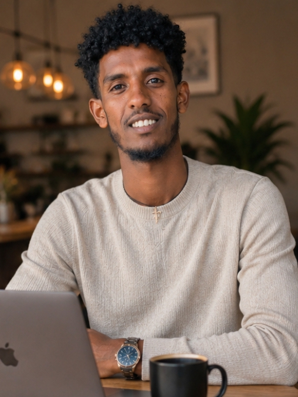

My name is Daniel Abrha. I am an IT student at Adigrat University, currently in my 3rd year. I created this website to share my journey, skills, and projects with the world. I am passionate about technology, martial arts, and continuous self-improvement.
I believe that growth comes from discipline, curiosity, and consistency. Every day, I push myself to learn something new — whether it's a programming concept, a new word in English, or a better karate technique.
My Background
I am currently studying Information Technology at Adigrat University, Ethiopia. Throughout my academic journey, I have learned the value of patience, hard work, and never giving up. I am building a strong foundation in programming and web development while also staying active in sports.
I have experience with HTML, CSS, JavaScript, C++, and databases. I enjoy turning ideas into real projects using code, and I am always excited to learn more about how technology works.
My Interests
I have two main passions in life: technology and karate. In technology, I focus on web development and game development. I love building websites, creating games like Snake and Puzzle, and exploring how systems work.
In karate, I hold the rank of First Dan (black belt) in Shotokan Karate. Martial arts has taught me discipline, respect, focus, and the power of never giving up. These lessons help me every day as a student and as a developer.
My Goals
My biggest goal is to become a professional expert in IT, specializing in web development and game development. I want to build useful and creative digital experiences that people enjoy using.
I also want to improve my English communication skills so I can connect with more people around the world and share my knowledge. I believe that technology has the power to bring people together, and I want to be part of that.
Final Thoughts
Thank you for visiting my website and taking the time to learn about me. I am just at the beginning of my journey, but I am committed to growing every single day — in coding, in karate, in English, and in life.
I believe that with discipline, hard work, and a curious mind, anything is possible. Every step forward is progress, and I am excited to see where this path leads.